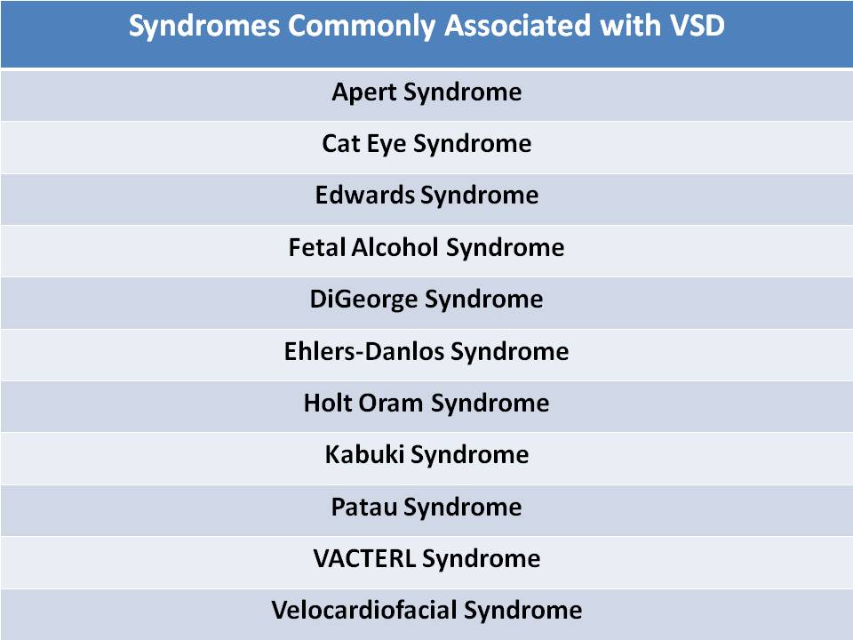
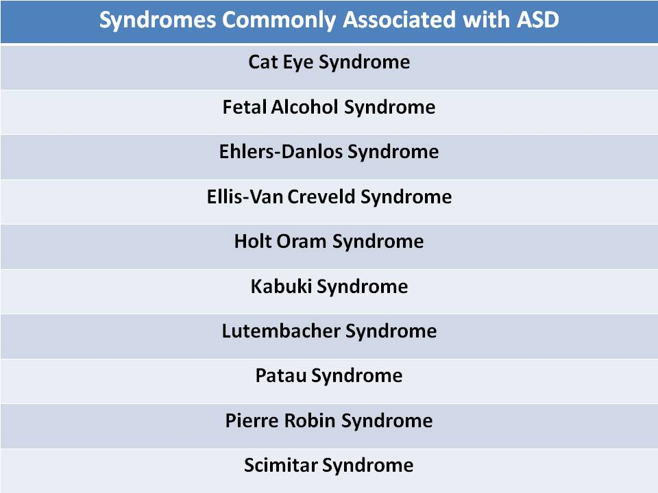
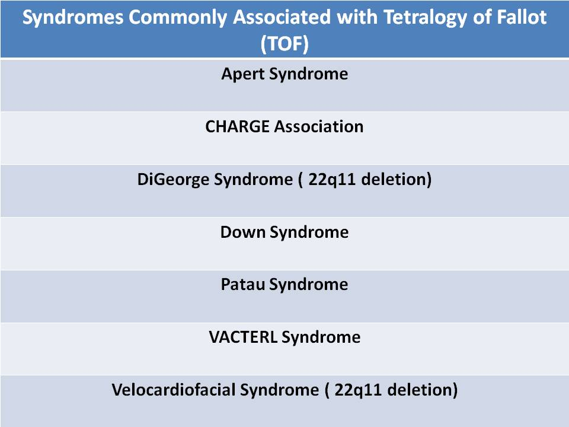
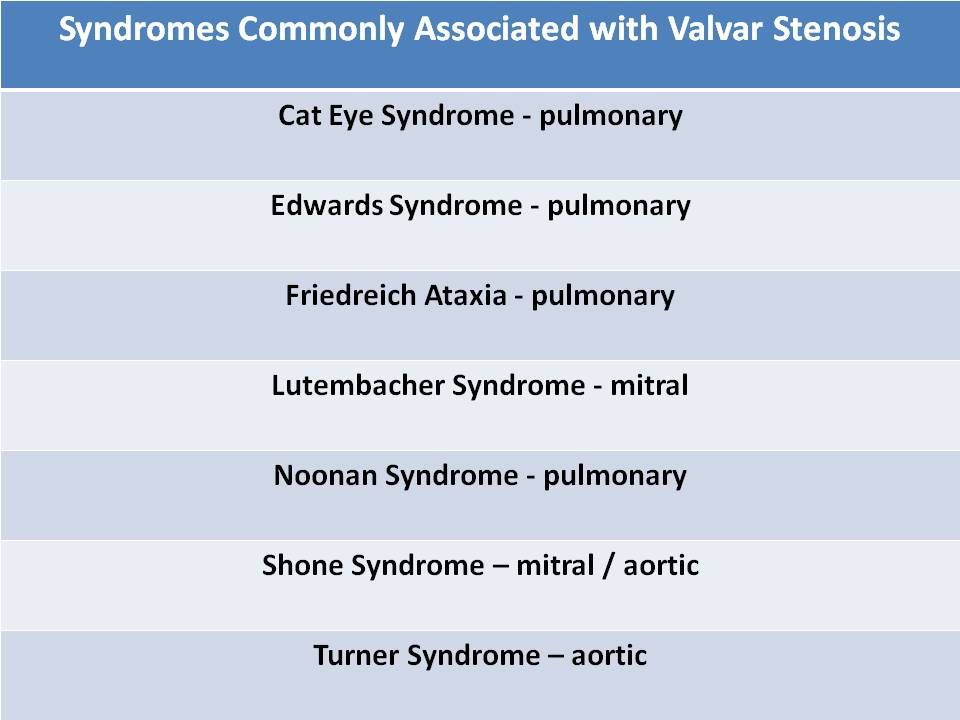
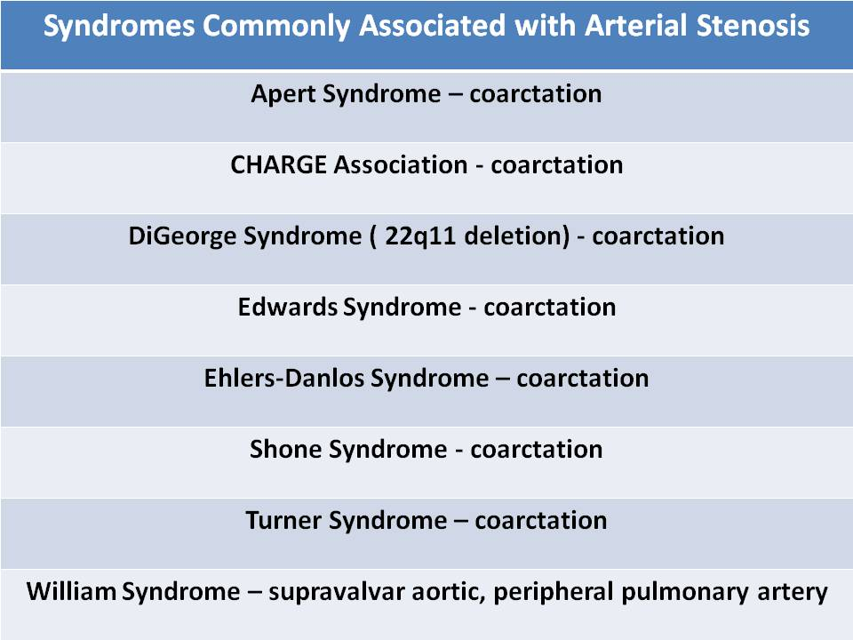

.jpg)
Fetal syndromes and chromosome anomalies
Apert Syndrome:
- Developmental malformation
- Coarctation
- VSD
- Tetralogy of Fallot
- Mental retardation, developmental delay
- Rhabdomyomas
- Distinctive eye abnormality
- ASD
- VSD
- Double Outlet Right Ventricle
- Pulmonary stenosis
- Total Anomalous Pulmonary Venous Return
- Central nervous system anomalies, Heart defects, choanal Atresia, Retardation of growth, Genital defects, Ear anomaly
- Tetralogy of Fallot
- AV Canal Defect
- Double Outlet Right Ventricle
- Coarctation of the aorta
- VSD
- Tetralogy of Fallot
- Double Outlet Right Ventricle
- Coarctation of the aorta
- Interrupted aortic arch
- About 50 % of Down syndrome patients (trisomy 21) can have congenital heart defect
- AV Canal Defect (#1)
- Tetralogy of Fallot
- Double Outlet Right Ventricle
- VSD
- COA
- The measurement of the fetal nuchal translucency space is a powerful marker to detect Trisomy 21
- Nuchal translucency is defined as the normal fluid filled space between the fetal neck and the skin in a first trimester pregnancy (measured 11 - 13 weeks, >3mm abnormal)
- Nuchal skin fold is defined as skin thickening of the posterior neck in a second trimester pregnancy (measured 15 - 21 weeks, >6mm abnormal)
- With Trisomy 21 fetus, nuchal translucency/skin fold can be significantly increased in size
- Other Sonographic markers for Trisomy 21 include:
- Duodenal atresia
- Echogenic bowel
- Absent nasal bone
- Frontal bossing
- Conotruncal anomalies
- Interrupted aortic arch type B (most common)
- Truncus arteriosus
- Tetralogy of Fallot
- Double Outlet Right Ventricle
- Transposition
- VSD
- Coarctation of the aorta
- Bicuspid AV
- Pulmonary stenosis
- VSD
- ASD
- Coarctation of the aorta
- Double outlet right ventricle
- Connective tissue disorder
- Aortic dilation
- Coarctation of the aorta
- Interrupted aortic arch
- ASD
- VSD
- More prevalent in the Amish community
- Bone growth malformation
- ASD
- Single atrium
- Alcohol exposure during pregnancy
- VSD, ASD and tetralogy of Fallot
- Hydrops
- Intracranial hemorrhage
- Deafness, mental retardation
- Patent ductus arteriosus, pulmonary branch artery stenosis, ventricular septal defect, and tetralogy of Fallot
- Progressive damage to nervous system
- Pulmonary stenosis
- Hypertrophic Obstructive Cardiomyopathy
- Anomalies of upper limbs, absent radial bones in the arms
- More commonly the left arm/hand
- ASD
- VSD
- First degree heart block
- AV Canal Defect
- Congenital heart block
- Atrial isomerism
- ASD
- VSD
- MVP
- PDA
- ASD
- Mitral stenosis
- ASD
- Connective tissue disorder
- Dilated aortic root,dissection
- Hypertrophic cardiomyopathy
- Conotruncal anomalies: d-transposition of the great vessels, truncus arteriosus, double outlet right ventricle
- Not related with congenital heart defect
- Pulmonary stenosis
- ASD
- Hypertrophic obstructive cardiomyopathy
- Interrupted aortic arch
- Agenesis of ductus venosus - no clear linear continuity between the umbilical vein and the right atrium
- Related with cardiomegaly, increased cardiac output (volume)
- Dilatation of the inferior vena cava
- VSD
- ASD
- PDA
- Tetralogy of Fallot
- Hypoplastic left heart syndrome
- AVSD
- ASD
- Pulmonary venolobar
- Partial Anomalous Pulmonary Venous Return
- Hypoplastic or absent right pulmonary artery and right lung
- Leads to anomalous systemic arterial supply to the right lung and a curved anomalous right pulmonary vein that drains into the inferior vena cava and resembles the curved Middle Eastern sword called a “ Scimitar”
- Absent right pulmonary artery
- ASD
- Mitral valve anomalies: supravalvular mitral membrane, parachute mitral valve
- Subaortic stenosis (membranous or muscular)
- Interrupted aortic arch
- Coarctation of the aorta
- Hypoplastic Left Heart Syndrome
- ASD, VSD
- PDA
- Persistent left SVC
- VSD
- TOF
- DORV
- Chromosome disorder for female patients (45X0)
- Cystic hygroma formation is a common finding on OB ultrasound
- Most commonly associated with left side obstructive lesions
- Bicuspid aortic valve
- Coarctation of the aorta
- Hypoplastic Left Heart Syndrome
- Aortic stenosis
- VSD/ASD/AVSD
- Vertebral anomalies, Anal atresia, Cardiac defects, Tracheoesophageal fistula and/or Esophageal atresia, Renal & Radial anomalies and Limb defects
- Hypoplastic Left Heart Syndrome
- Tetralogy of Fallot
- VSD
- Tetralogy of Fallot
- VSD
- Right aortic arch
- Supravalvular aortic stenosis
- Peripheral or branch pulmonary stenosis
 
 
